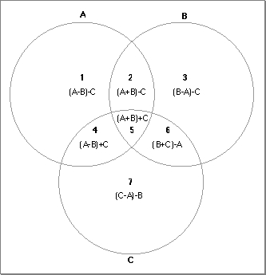

Drawing Shapes
As you've seen, you can draw circles by callingFrameOval. The Venn Diagrammer application uses code like this to draw the outlines of the five circles:FOR count := 1 TO 5 DO FrameOval(gGeometry^^.circleRects[count]);The rectangles defining the circles are stored in an array of rectangles that is one of the fields of an application-defined data structure of typeMyGeometryRec. Venn Diagrammer allocates just one of these records when the application first starts up. The global variablegGeometryis a handle to that record.VAR gGeometry: MyGeometryHnd; {handle to a geometry record}Listing 5-2 shows part of the structure of this record.Listing 5-2 The structure of a record describing a document window's geometry
TYPE MyGeometryRec = RECORD circleRects: ARRAY[1..5] OF Rect; {squares for the 5 circles} circleRgns: ARRAY[1..5] OF RgnHandle; {regions for the 5 circles} premiseRgns: ARRAY[1..8] OF RgnHandle; {regions for premises} concRgns: ARRAY[1..4] OF RgnHandle; {regions for conclusion} {other fields omitted} END; MyGeometryPtr = ^MyGeometryRec; MyGeometryHnd = ^MyGeometryPtr;This record contains all the information needed to perform graphics operations on the Venn diagram in a document window. The fields are initialized at application launch time by the application-defined routineDoInitGeometry, shown in Listing 5-3.Listing 5-3 Initializing the geometry record
PROCEDURE DoInitGeometry; BEGIN {Allocate the memory needed to hold the diagram's geometry.} gGeometry := MyGeometryHnd(NewHandleClear(sizeof(MyGeometryRec))); IF gGeometry = NIL THEN {make sure we have the memory} DoBadError(eNotEnoughMemory); {see Listing 9-5 on page 178} {Set up the rectangles that define the circles.} FOR count := 1 TO 5 DO gGeometry^^.circleRects[count] := MyGetIndCircleRect(count); {Set up the regions that the circles define.} DoSetupCircleRegions; {Set up the overlapping regions within the circles.} DoSetupOverlapRegions; END;TheDoInitGeometryprocedure allocates a geometry record and calls other application-defined routines to initialize the fields of that record. First, it callsMyGetIndCircleRectto determine the rectangle bounding each of the five circles.Then
- Note
- The
MyGetIndCircleRectfunction is not defined in this book. You could define such a function in many ways. You could determine in advance where in the window the five rectangles should be and then hard-code that information in constants. Alternatively, you could calculate desirable positions dynamically at run time. The Venn Diagrammer application uses the first method, for speed.DoInitGeometrycalls two other application-defined routines to set up a number of regions in the window. The first,DoSetupCircleRegions, defined in Listing 5-4, creates regions corresponding to the area inside each of the five circles. These regions are used in turn by theDoSetupOverlapRegionsprocedure to calculate the regions of intersection.Listing 5-4 Defining circular regions
PROCEDURE DoSetupCircleRegions; VAR count: Integer; BEGIN FOR count := 1 TO 5 DO BEGIN gGeometry^^.circleRgns[count] := NewRgn; OpenRgn; FrameOval(gGeometry^^.circleRects[count]); CloseRgn(gGeometry^^.circleRgns[count]); END; END;You create a new region by calling theNewRgnfunction, which allocates storage in your application heap for a structure of typeRegionand returns a handle (of typeRgnHandle) to that region. The newly created region is empty. To add to the region, you call theOpenRgnprocedure and then draw the outline of the area you want enclosed by the region. As you can see,DoSetupCircleRegionsindicates the desired area by calling theFrameOvalprocedure on a circle's defining rectangle. When you're done drawing that outline, you call theCloseRgnprocedure, passing it a handle to the region to close.If you simply want to create a region that's empty, you can call
NewRgn,OpenRgn, andCloseRgnwithout doing any drawing.myRegion := NewRgn; {create an empty region} OpenRgn; CloseRgn(myRegion);TheDoSetupOverlapRegionsprocedure, defined in Listing 5-5, uses the circular regions defined byDoSetupCircleRegionsto define the regions corresponding to the areas defined by the overlapping circles.Listing 5-5 Defining noncircular regions
PROCEDURE DoSetupOverlapRegions; VAR myRegion: RgnHandle; {a scratch region} count: Integer; BEGIN FOR count := 1 TO 8 DO {create new, empty regions} BEGIN gGeometry^^.premiseRgns[count] := NewRgn; OpenRgn; CloseRgn(gGeometry^^.premiseRgns[count]); END; myRegion := NewRgn; {create a scratch region} OpenRgn; CloseRgn(myRegion); {Calculate the overlap regions in the premises diagram.} HLock(Handle(gGeometry)); {lock the handle} WITH gGeometry^^ DO BEGIN DiffRgn(circleRgns[1], circleRgns[2], myRegion); DiffRgn(myRegion, circleRgns[3], premiseRgns[1]); SectRgn(circleRgns[1], circleRgns[2], myRegion); DiffRgn(myRegion, circleRgns[3], premiseRgns[2]); DiffRgn(circleRgns[2], circleRgns[1], myRegion); DiffRgn(myRegion, circleRgns[3], premiseRgns[3]); SectRgn(circleRgns[1], circleRgns[3], myRegion); DiffRgn(myRegion, circleRgns[2], premiseRgns[4]); SectRgn(circleRgns[1], circleRgns[2], myRegion); SectRgn(myRegion, circleRgns[3], premiseRgns[5]); SectRgn(circleRgns[2], circleRgns[3], myRegion); DiffRgn(myRegion, circleRgns[1], premiseRgns[6]); DiffRgn(circleRgns[3], circleRgns[1], myRegion); DiffRgn(myRegion, circleRgns[2], premiseRgns[7]); END; HUnlock(Handle(gGeometry)); {unlock the handle} DisposeRgn(myRegion); {dispose scratch region} END;TheDoSetupOverlapRegionsprocedure is remarkably straightforward. It initializes the regions in the premises diagram and also creates a temporary scratch region. Then it calculates the seven regions of overlap in that diagram by callingSectRgnandDiffRgnon the circular regions defined in Listing 5-4. TheSectRgnprocedure takes the intersection of two regions and places it into a third region. TheDiffRgnprocedure takes the portion of the first region that is outside the second region and places it into the third region. Figure 5-7 shows how the overlap regions are defined by taking intersections and unions of the three circles.Figure 5-7 Calculating the overlap regions of a Venn diagram

Now that the Venn Diagrammer application has defined the various regions in the Venn diagram, it's easy to draw in those regions. For instance, to shade the very center of the diagram, you could call the
- Note
- The definition of
DoSetupOverlapRegionsgiven in Listing 5-5 is
not complete. It omits calculations of the conclusion regions and of the fields omitted from theMyGeometryRecdata structure defined in Listing 5-2.
FillRgnprocedure, as follows:FillRgn(gGeometry^^.premiseRgns[5], gEmptyPats[gEmptyIndex]^^);This fills the specified region with the current emptiness pattern.